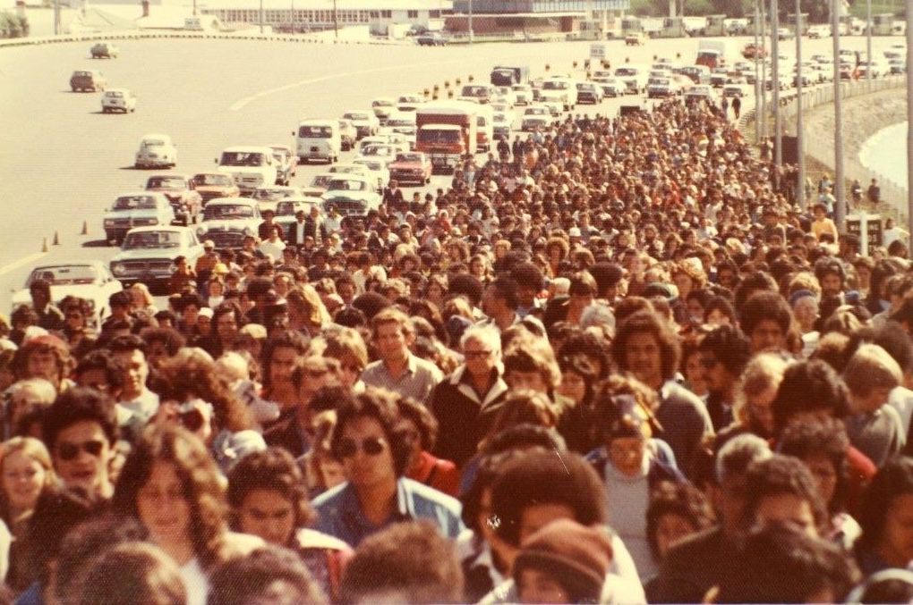
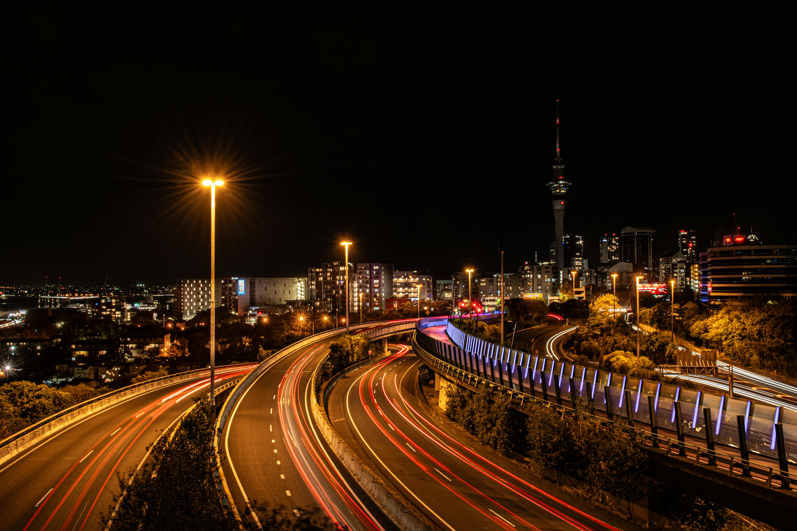
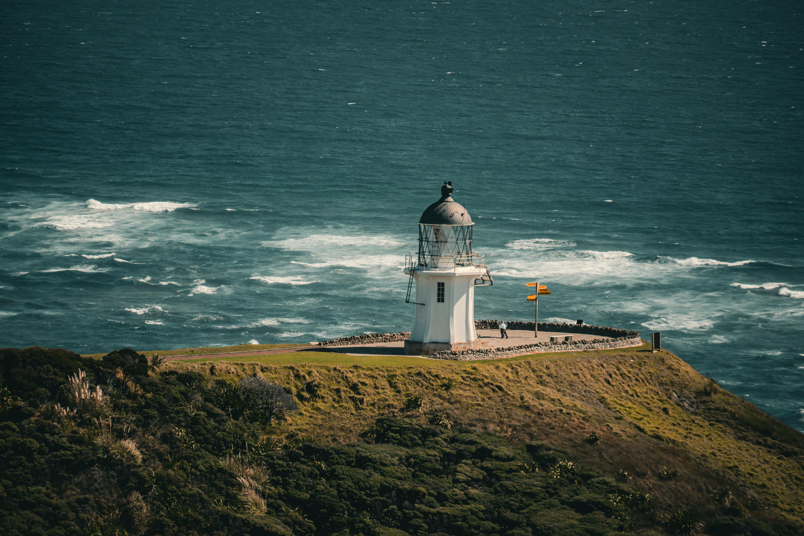
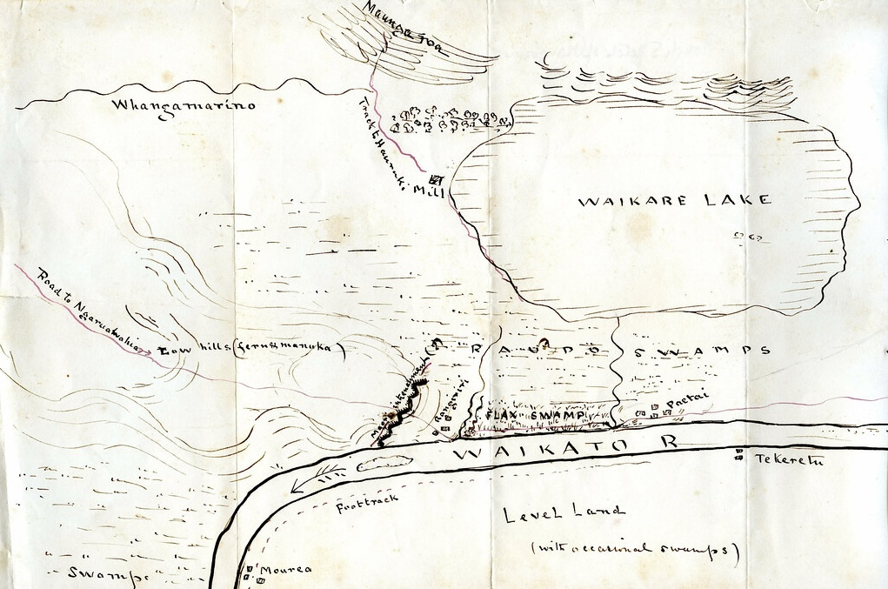
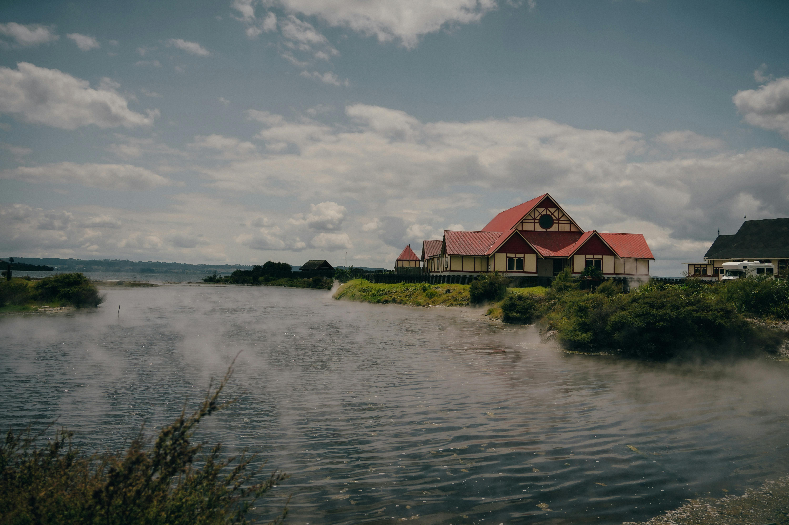
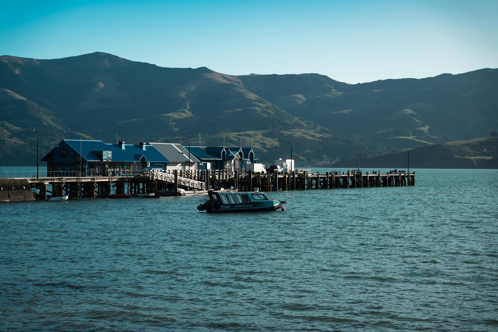

Follow the route of the 1975 Māori Land March
Discover the very route that Dame Whina Cooper and her group Te Rōpū Matakite o Aotearoa had travelled from 14th September to 13 October 1975.
Image by Wikipedia Commons, licensed under CC BY 2.0
Explore the Māori history and culture within Tāmaki Makaurau (Auckland)
Explore key landmarks within the city of Tāmaki Makaurau (Auckland), Aotearoa New Zealand's capital, to learn more about the history and culture of the Māori people.

Uncover the route to learn the enriching Māori history in Northland
Discover the Northland region rich in early Māori history through initial settlement specifically within the Bay of Islands known also for its Māori cultural artefacts and undeveloped beaches.

Learn about the Waikato campaign in the New Zealand Wars from 1863 to 1864
Uncover the a famous campaign from one of the most important conflicts in NZ history for deeper historical knowledge on Māori settlement and history.
Image by Wikipedia Commons, licensed under CC BY 2.0
Discover Māori culture, traditions, and food within the city of Rotorua
Go and visit Rotorua known for its extensive and enriching Māori culture, its renowned geothermal activity and home to a living Māori village and the New Zealand Māori Arts and Crafts Institute.

Explore Te Waipounamu (South Island) embedded with rich Māori culture
Find out about the beautiful landscape that Te Waipounamu/South Island has to offer while learning about the significance of Māori history centred on the Ngāi Tahu iwi.